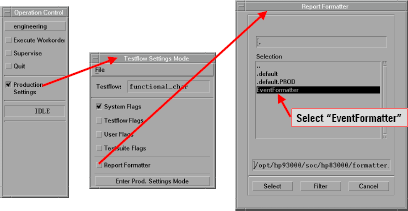
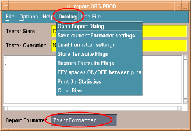

Event Formatter
Activate the Event Formatter:
- Click Production Settings in the Operation Control
window.
This opens the Testflow Settings Mode window.
- Click Report Formatter in the Testflow Settings Mode
window.
This opens the Report Formatter window.
- Choose EventFormatter and click Select
(or double-click EventFormatter).

Using the event formatter:
The Event Formatter is an event-based report formatter that lets you make full use of the capabilities of event data logging.
With its own dialog window for customizing the format as well as the scope of the data output, the Event Formatter is a powerful data logging tool.
When the Event Formatter is activated, the report window shows a specific set of menus which give you access to all functions of the Event Formatter. The following figure shows the Data Log menu and its menus.
The functionality of the commands in the Data Log menu of the Event Formatter is described below:
Open Report Dialog
Opens the Report Dialog window. In this window you can specify which data log data and in which format this data will be written to the report window. For a detailed description of this dialog window, see the Output of the Event Formatter.
Save current Formatter Settings
Saves your current settings for the Event Formatter to the .formatterrc file in your home directory. For more information about this file, see Settings for the Event Formatter.
Load Formatter Settings
Loads the saved settings for the Event Formatter from the .formatterrc file in your home directory. For more information about this file, see Settings for the Event Formatter.
Restore Testsuite Flags
If the Event Formatter made changes to testsuite flags, this menu item restores the flags to the state they were in before the first changes were made. See Handling of test suite flags by the Event Formatter for further information.
FFV spaces ON/OFF between Pins
Toggles whether or not spaces are included between each pin column in the FFV output in short mode.
Print Bin Statistics
Writes simple bin statistics with yield calculation to the lower text window.
Clear Bins
Sets the number of binned devices for all bins to zero.
